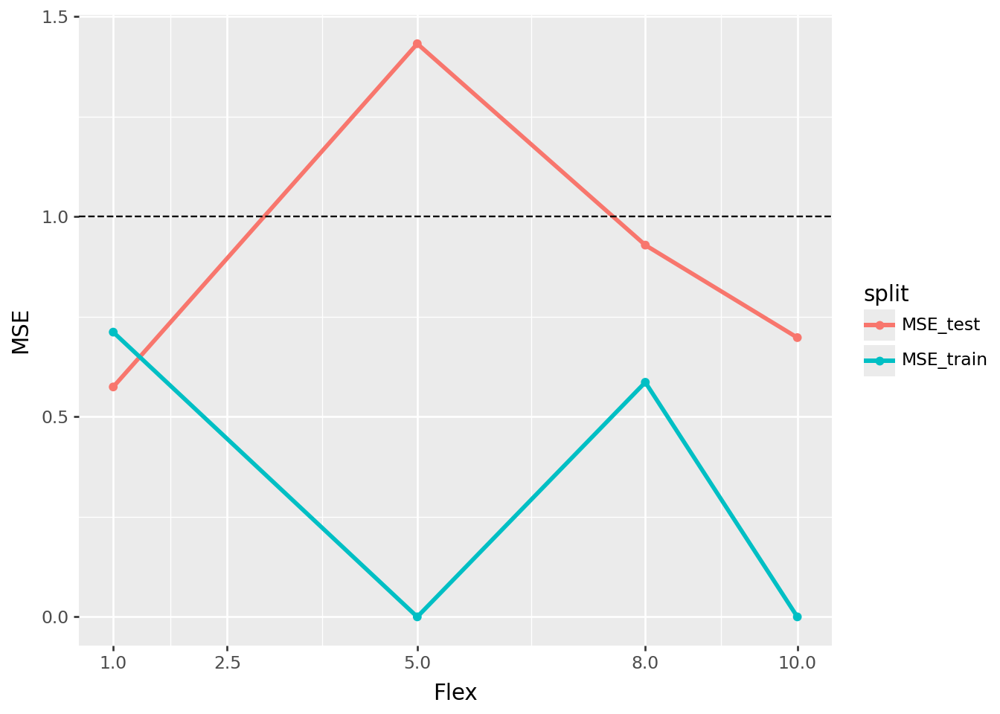

import pandas as pd
import numpy as np
import plotnine as p9
from palmerpenguins import load_penguins
from sklearn.impute import SimpleImputer
from sklearn.pipeline import Pipeline
from sklearn.preprocessing import StandardScaler, OneHotEncoder, PolynomialFeatures
from sklearn.linear_model import LinearRegression, Ridge, Lasso, ElasticNet
from sklearn.model_selection import train_test_split, cross_val_score, GridSearchCV
from sklearn.compose import ColumnTransformer
from sklearn.metrics import r2_score , mean_squared_error
from sklearn.model_selection import cross_val_score
from sklearn.neighbors import KNeighborsRegressor
from sklearn.tree import DecisionTreeRegressorPalmer Penguins Modeling
Import the Palmer Penguins dataset and print out the first few rows.
Suppose we want to predict bill_depth_mm using the other variables in the dataset.
Dummify all variables that require this.
# Code Here
dataset = load_penguins().dropna()
X = dataset.drop("bill_depth_mm", axis = 1)
y = dataset["bill_depth_mm"]
X_train, X_test, y_train, y_test = train_test_split(
X, y)num_cols = ["bill_length_mm","flipper_length_mm","body_mass_g"]
cat_cols = ["species","island","year"]
preprocess = ColumnTransformer(
transformers=[
("num", Pipeline([
("impute", SimpleImputer(strategy="median")),
("scale", StandardScaler())
]), num_cols),
("cat", Pipeline([
("impute", SimpleImputer(strategy="most_frequent")),
("ohe", OneHotEncoder(handle_unknown="ignore", sparse_output=False))
]), cat_cols),
],
remainder="drop"
).set_output(transform="pandas")
lr_pipeline = Pipeline(
[("preprocessing", preprocess),
("linear_regression", LinearRegression())]
).set_output(transform="pandas")model_lr = lr_pipeline.fit(X_train,y_train)
lr_flex = 1
LR_train_MSE = mean_squared_error(y_train, model_lr.predict(X_train))
LR_test_MSE = mean_squared_error(y_test, model_lr.predict(X_test))Let’s use the other variables to predict bill_depth_mm. Prepare your data and fit the following models on the entire dataset:
- Your best multiple linear regression model from before
- Two kNN models (for different values of K)
- A decision tree model
Create a plot like the right plot of Fig 1. in our Model Validation chapter with the training and test error plotted for each of your four models.
Which of your models was best?
knn_pipe = Pipeline([
("preprocess", preprocess),
("KNN", KNeighborsRegressor(n_neighbors=5))
]).set_output(transform="pandas")
param_grid = {
"KNN__weights": ["uniform", "distance"],
"KNN__p": [1, 2], # 1=Manhattan, 2=Euclidean
}
gs = GridSearchCV(knn_pipe, param_grid, cv=5,
scoring="neg_root_mean_squared_error", n_jobs = -1)gs.fit(X_train, y_train)
best = gs.best_estimator_
yhat = best.predict(X_test)
gs.best_params_{'KNN__p': 2, 'KNN__weights': 'distance'}tuned_knn_pipeline1 = Pipeline([
("preprocess", preprocess),
("KNN", KNeighborsRegressor(n_neighbors=1,p = 2, weights= "distance"))
]).set_output(transform="pandas")Model_knn1 = tuned_knn_pipeline1.fit(X_train, y_train)
knn1_flex = 5
knn1_train_MSE = mean_squared_error(y_train, Model_knn1.predict(X_train))
knn1_test_MSE = mean_squared_error(y_test, Model_knn1.predict(X_test))knn_pipe2 = Pipeline([
("preprocess", preprocess),
("KNN", KNeighborsRegressor(n_neighbors=10))
]).set_output(transform="pandas")gs_2 = GridSearchCV(knn_pipe2, param_grid, cv=5,
scoring="neg_root_mean_squared_error", n_jobs = -1)
gs_2.fit(X_train, y_train)
best2 = gs.best_estimator_
yhat2 = best2.predict(X_test)
gs_2.best_params_{'KNN__p': 1, 'KNN__weights': 'distance'}tuned_knn_pipeline2 = Pipeline([
("preprocess", preprocess),
("KNN", KNeighborsRegressor(n_neighbors=10,p = 2, weights= "distance"))
]).set_output(transform="pandas")Model_knn2 = tuned_knn_pipeline2.fit(X_train, y_train)
knn2_flex = 10
knn2_train_MSE = mean_squared_error(y_train, Model_knn2.predict(X_train))
knn2_test_MSE = mean_squared_error(y_test, Model_knn2.predict(X_test))Tree_pipeline = Pipeline ([
("preprocess", preprocess),
("tree", DecisionTreeRegressor(random_state=12))
]).set_output(transform="pandas")param_grid2 = {
"tree__max_depth": [1, 3, 5, 8, 12, 20],
"tree__min_samples_split": [2, 5, 10, 20],
"tree__min_samples_leaf": [1, 2, 5, 10],
"tree__max_features": [None, "sqrt", "log2"],}
gs2 = GridSearchCV(
Tree_pipeline, param_grid2, cv=5,
scoring="neg_root_mean_squared_error", n_jobs=-1
)
gs2.fit(X_train, y_train)GridSearchCV(cv=5,
estimator=Pipeline(steps=[('preprocess',
ColumnTransformer(transformers=[('num',
Pipeline(steps=[('impute',
SimpleImputer(strategy='median')),
('scale',
StandardScaler())]),
['bill_length_mm',
'flipper_length_mm',
'body_mass_g']),
('cat',
Pipeline(steps=[('impute',
SimpleImputer(strategy='most_frequent')),
('ohe',
OneHotEncoder(handle_unknown='ignore',
sparse_output=False))]),
['species',
'island',
'year'])])),
('tree',
DecisionTreeRegressor(random_state=12))]),
n_jobs=-1,
param_grid={'tree__max_depth': [1, 3, 5, 8, 12, 20],
'tree__max_features': [None, 'sqrt', 'log2'],
'tree__min_samples_leaf': [1, 2, 5, 10],
'tree__min_samples_split': [2, 5, 10, 20]},
scoring='neg_root_mean_squared_error')In a Jupyter environment, please rerun this cell to show the HTML representation or trust the notebook. On GitHub, the HTML representation is unable to render, please try loading this page with nbviewer.org.
GridSearchCV(cv=5,
estimator=Pipeline(steps=[('preprocess',
ColumnTransformer(transformers=[('num',
Pipeline(steps=[('impute',
SimpleImputer(strategy='median')),
('scale',
StandardScaler())]),
['bill_length_mm',
'flipper_length_mm',
'body_mass_g']),
('cat',
Pipeline(steps=[('impute',
SimpleImputer(strategy='most_frequent')),
('ohe',
OneHotEncoder(handle_unknown='ignore',
sparse_output=False))]),
['species',
'island',
'year'])])),
('tree',
DecisionTreeRegressor(random_state=12))]),
n_jobs=-1,
param_grid={'tree__max_depth': [1, 3, 5, 8, 12, 20],
'tree__max_features': [None, 'sqrt', 'log2'],
'tree__min_samples_leaf': [1, 2, 5, 10],
'tree__min_samples_split': [2, 5, 10, 20]},
scoring='neg_root_mean_squared_error')Pipeline(steps=[('preprocess',
ColumnTransformer(transformers=[('num',
Pipeline(steps=[('impute',
SimpleImputer(strategy='median')),
('scale',
StandardScaler())]),
['bill_length_mm',
'flipper_length_mm',
'body_mass_g']),
('cat',
Pipeline(steps=[('impute',
SimpleImputer(strategy='most_frequent')),
('ohe',
OneHotEncoder(handle_unknown='ignore',
sparse_output=False))]),
['species', 'island',
'year'])])),
('tree',
DecisionTreeRegressor(max_depth=3, min_samples_leaf=10,
random_state=12))])ColumnTransformer(transformers=[('num',
Pipeline(steps=[('impute',
SimpleImputer(strategy='median')),
('scale', StandardScaler())]),
['bill_length_mm', 'flipper_length_mm',
'body_mass_g']),
('cat',
Pipeline(steps=[('impute',
SimpleImputer(strategy='most_frequent')),
('ohe',
OneHotEncoder(handle_unknown='ignore',
sparse_output=False))]),
['species', 'island', 'year'])])['bill_length_mm', 'flipper_length_mm', 'body_mass_g']
SimpleImputer(strategy='median')
StandardScaler()
['species', 'island', 'year']
SimpleImputer(strategy='most_frequent')
OneHotEncoder(handle_unknown='ignore', sparse_output=False)
DecisionTreeRegressor(max_depth=3, min_samples_leaf=10, random_state=12)
gs2.best_params_{'tree__max_depth': 3,
'tree__max_features': None,
'tree__min_samples_leaf': 10,
'tree__min_samples_split': 2}tuned_tree_pipeline = Pipeline ([
("preprocess", preprocess),
("tree", DecisionTreeRegressor(min_samples_leaf=10, min_samples_split=2))
]).set_output(transform="pandas")Model_tree = tuned_tree_pipeline.fit(X_train, y_train)
tree_flex = 8
tree_train_MSE = mean_squared_error(y_train, Model_tree.predict(X_train))
tree_test_MSE = mean_squared_error(y_test, Model_tree.predict(X_test))data_sum = {
"model": ["LR", "KNN1", "KNN2", "Tree"],
"Flex" : [lr_flex, knn1_flex, knn2_flex, tree_flex],
"MSE_train" : [LR_train_MSE, knn1_train_MSE, knn2_train_MSE, tree_train_MSE],
"MSE_test" : [LR_test_MSE, knn1_test_MSE, knn2_test_MSE, tree_test_MSE]
}
summary = pd.DataFrame(data_sum).sort_values("Flex")
Long = summary.melt(id_vars=["model","Flex"],
value_vars = ["MSE_train", "MSE_test"],
var_name= "split",
value_name="MSE"
)
Long["split"] = Long["split"].str.replace("_mse","", regex=False)(p9.ggplot(Long, p9.aes("Flex", "MSE", color = "split", group = "split"))
+p9.geom_line(size = 1.2)
+p9.geom_hline(yintercept = 1, linetype = "dashed")
+p9.scale_x_continuous(breaks=[1,2.5,5,8,10,15])
+p9.geom_point())
The best model could have been ethier of the KNN models however i beleive their scores are not accurate as computing zero should not be possible and would mean that the model is absolutely perfect at predicting everything with no errors.